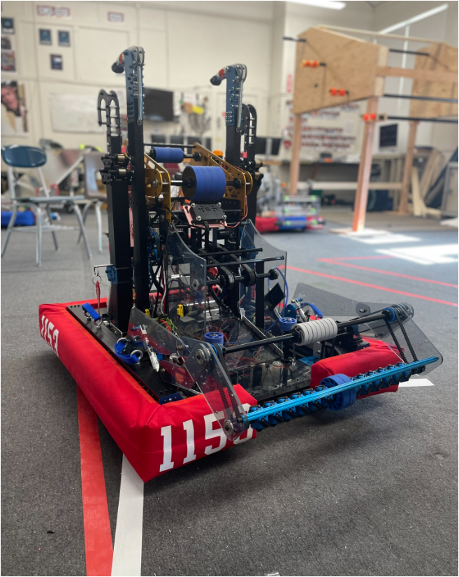

Hachiko is our 2022 robot. It uses a tank drive which can move forward and backward, and turn on its axis. Its intake goes over the bumper to collect the cargo, which moves through a slot in the bumper. Up to 2 cargo is stored in the indexer while the shooter revs up, which shoots the cargo one after another. The shooter is powerful enough to shoot from as close as the fender to as far as the launchpad with its adjustable speeds on the wheels. It can climb up to the traversal bar using climbing arms to climb up and static hooks to balance on the mid bar. Then, the climbing amrs reach back to the high bar and retract so the static hooks sit on the high bar, and repeat to reach the traversal bar.
Notable Achievements |
|---|
| North Shore | Finalist
Quality Award |
|---|
| Central Mass | Finalist
Quality Award |
|---|
| NEDCMP | 1st pick of alliance 4
Industrial Design Award |
|---|
| CMP | 11th place in qualifications |
|---|
